AI와 쌓는 관계, 그래도 결정은 사람이
이번 손님은 OpenAI에서 수익화를 맡은 부사장 벤지 쇼메어(Benji Shomair)예요. 뉴욕 OpenAI 사무실에서 이소은 진행자가 'AI를 만드는 사람들은 AI를 어떻게 쓰는지'를 물었어요. 화면 오른쪽 위 작은 글씨가 직함, 노란 큰 글씨가 이름이에요.
최근에 챗GPT에 시킨 일
첫 질문은 '마지막으로 챗GPT에 뭘 물었나요'였어요. 답은 욕실 벽등 고르기예요. 디자이너에게 받은 욕실 렌더링 이미지에, 온라인 매장에서 찾은 벽등 사진을 넣어 달라고 해요. 그러면 실제로 달았을 때 모습을 몇 초 만에 보고, 후보를 계속 바꿔 끼울 수 있어요. 예전엔 몇 주가 걸리거나, 달아 보기 전엔 알 수 없던 일이에요.
챗GPT가 자기에 대해 얼마나 아느냐는 질문에는 '관계'라는 말을 꺼내요. 처음엔 편한 이야기만 하다가, 도구가 주는 가치와 통제 장치를 알게 되면서 조금씩 더 맡긴다는 거예요. 지금은 가족, 진행 중인 프로젝트, 재무 정보까지 꽤 많이 알고 있대요. 신뢰가 쌓이는 속도만큼만 공유 범위를 넓히면 된다는 이야기예요.
요약에서 추론, 그리고 실행으로
입사한 지 1년쯤 됐는데, 그 사이 할 수 있는 일이 '밤과 낮'만큼 달라졌대요. 아래 화면의 동그라미 세 개가 그 변화예요. 초기 AI는 주로 요약을 했어요. 최근 몇 달 사이엔 추론, 즉 여러 단계로 생각하고 질문자가 뭘 원하는지 되묻는 단계가 됐어요. 노란 테두리로 강조한 마지막 칸이 실행이에요. 사람 대신 직접 일을 처리하는 단계죠.
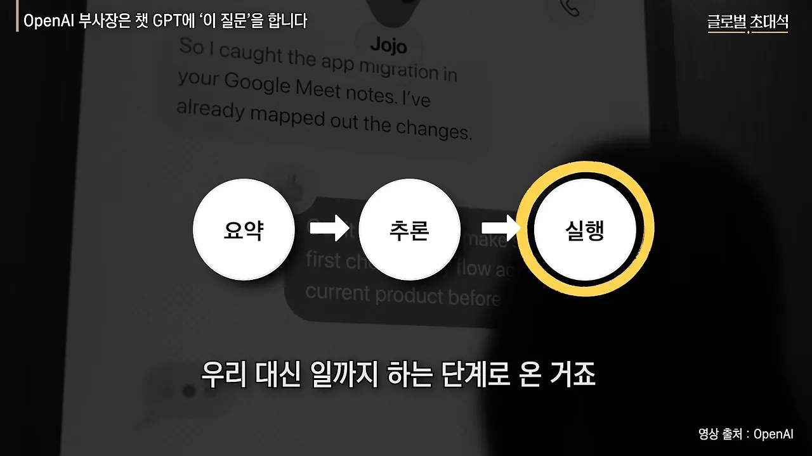
그래도 결정은 사람이 해요
그렇다면 AI에게 절대 맡기지 않는 결정은 뭘까요. 쇼메어 부사장은 영향이 크고 되돌리기 어려운 결정, 이른바 원웨이 도어를 꼽아요. AI는 정보를 찾고 선택지를 정리하고, 결정할 때 따져 볼 질문을 짚어 줘요. 하지만 결정 자체는 넘기지 않아요.
any decision where you think of it as a one-way door
되돌릴 수 없는 문이라고 여겨지는 결정이라면 어떤 것이든요.
— 영상 04:28
편집팀은 이 생각을 한 장으로 정리했어요. 왼쪽 AI는 선택지를 내놓고, 화살표 오른쪽의 사람이 최종 결정을 해요.
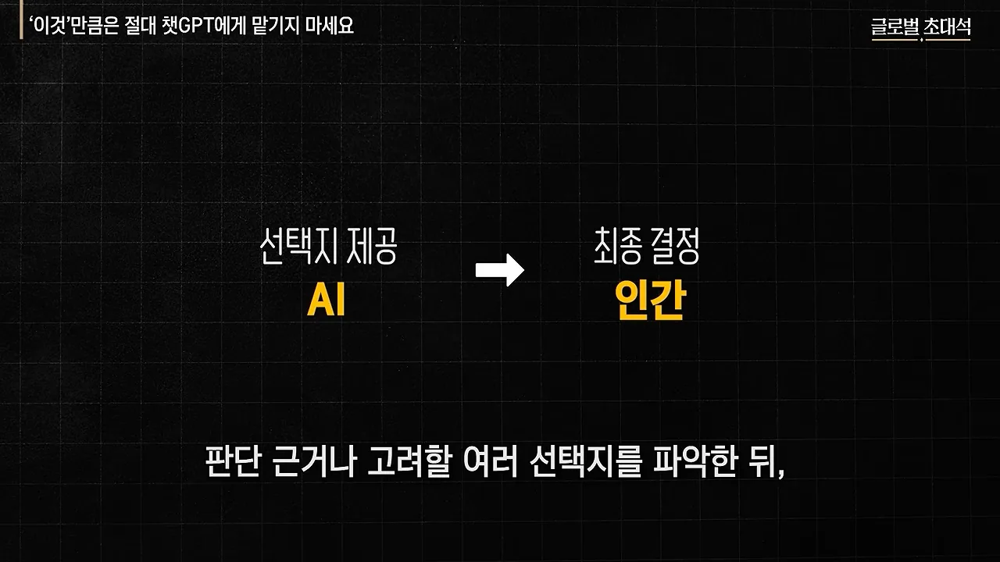
예로 든 건 치과예요. 의사가 치아 검사를 받아 보라고 했는데, 그게 무슨 검사이고 선택지가 뭔지 알아보는 일이 귀찮아서 계속 미뤘대요. 미루느라 두세 달, 길게는 넉 달이 걸리던 과정이 이제 챗GPT에 물어 2~4분이면 끝나요. 그래도 결정은 본인이 하고, 치과에도 직접 가야 해요. 치과만큼은 언젠가 AI에게 맡기고 싶다며 둘 다 웃어요.
OpenAI가 사람을 뽑을 때 보는 것
두 후보의 배경과 경력, 이력서가 거의 같다면 누구를 뽑을까요. 쇼메어 부사장의 답은 지적 호기심과 질문하려는 자세예요. 화면 왼쪽에 그 두 가지가 정리돼 있어요.
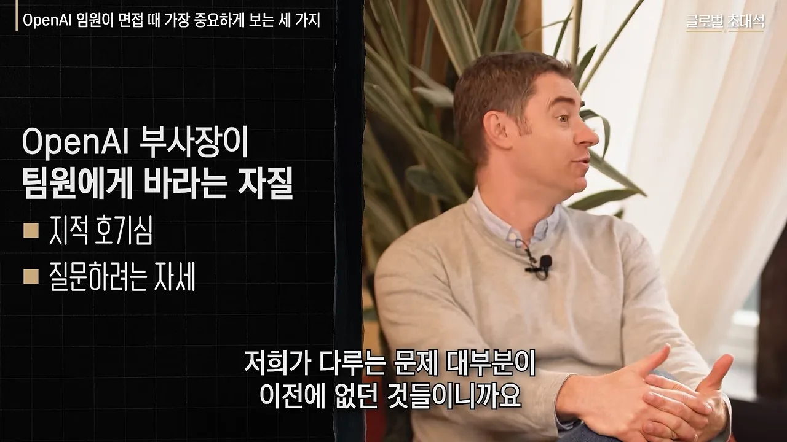
그래서 새로 들어온 팀원에게 이렇게 말한대요. 당신의 기술과 경험, 생각하는 방식을 보고 뽑았지만, 예전 회사의 플레이북을 그대로 들고 오면 실패한다고요.
if you just come to OpenAI and have this playbook of how you did things in other places and apply that here, you will fail.
다른 곳에서 하던 방식을 그대로 가져와 여기 적용하면, 실패할 거예요.
— 영상 06:06
필요한 건 과거 경험에서 무엇이 지금 상황에 맞는지 골라내는 힘이에요. 그리고 제1원칙 사고로 당연한 것부터 다시 따져서 이 문제에 맞는 답을 찾는 사람이에요.
호기심을 알아보는 면접 질문
호기심은 어떻게 확인할까요. 질문을 두 갈래로 나눠 던진대요. 아래 화면 왼쪽 '개인' 열은 관심사를 묻는 질문이에요. 무엇을 좋아하는지, 어떻게 파고드는지, 왜 좋아하는지를 들으면 그 사람이 생각하는 깊이가 보여요. 오른쪽 '업무' 열은 처음 겪는 문제를 어떻게 접근했고, 어떤 구조로 나눴고, 어떻게 풀었는지를 차례로 물어요.
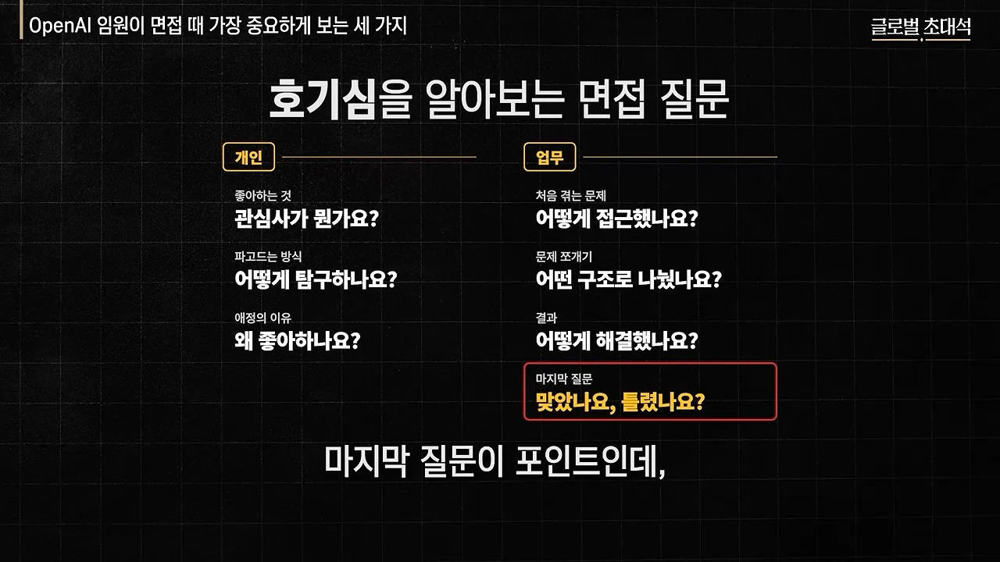
마지막 질문을 넣는 이유는 틀려도 괜찮다는 걸 보여 주기 위해서예요. OpenAI도 모든 답을 알지 못하고, 뽑는 사람에게도 그걸 기대하지 않는대요. 대신 호기심을 갖고, 대담하게 풀어 보고, 틀렸으면 빨리 배워서 고치기를 기대해요.
AI를 잘 쓰는 사람은 어떻게 알아볼까요?
5분 만에 누가 AI를 정말 잘 쓰는지 알 수 있을까요. 쇼메어 부사장은 자기만의 명확한 기준이 있지만, 짧은 면접으로는 가려내기 어렵다고 먼저 말해요. 조직을 키우면서 OpenAI도 고민하는 부분이래요.
기준의 출발점은 이거예요. AI 덕분에 결과물을 만들기가 어느 때보다 쉬워졌어요. 하지만 결과물이 많다고 다 좋은 건 아니에요. 아래 화면의 두 동그라미가 그 기준이에요. 왼쪽 '생산성 향상'만 있으면 부족하고, 오른쪽 '품질 유지·품질 상승'이 함께 붙어야 해요.
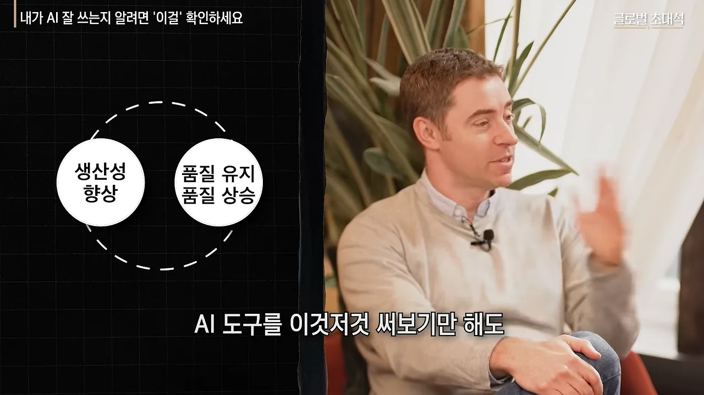
AI 도구를 이것저것 써 보기만 해도 결과물 10배는 어렵지 않대요. 인터넷에 넘치는 AI 슬롭이 그 증거예요. 그래서 쇼메어 부사장은 두 사람을 이렇게 나눠 봐요.
| AI를 가지고 놀기만 하는 사람 | AI 네이티브 | |
|---|---|---|
| 결과물의 양 | 10배로 늘어요 | 10배로 늘어요 |
| 결과물의 품질 | 떨어지기 쉬워요 | 같거나 더 좋아져요 |
| 무엇이 좋은지 판단 | 모델에게 넘겨요 | 직접 생각하고 판단해요 |
팀에서 놀라운 성과를 내는 사람들은 오른쪽 열이래요. 예전보다 훨씬 많은 결과물을 만들면서, 무엇이 필요하고 무엇이 좋은 품질인지는 모델에게 미루지 않고 직접 정해요. 진행자가 '그게 사람의 역할이네요'라고 정리하자, 맞다고 답해요.
AI 시대에 더 중요해진 역량
그럼 어떤 역량이 쓸모없어지고, 어떤 역량이 더 중요해질까요. 쇼메어 부사장은 엑셀과 파워포인트로 커리어를 시작했어요. 정보를 구조화하고 분석하고, 슬라이드로 이야기를 풀어내는 힘은 지금도 가치가 있대요. 달라진 건 AI가 그 안의 단순 반복 작업을 많이 가져갔다는 점이에요. 그만큼 더 높은 수준의 생각이 중요해졌어요. 화면 왼쪽에 그 두 가지가 정리돼 있어요.
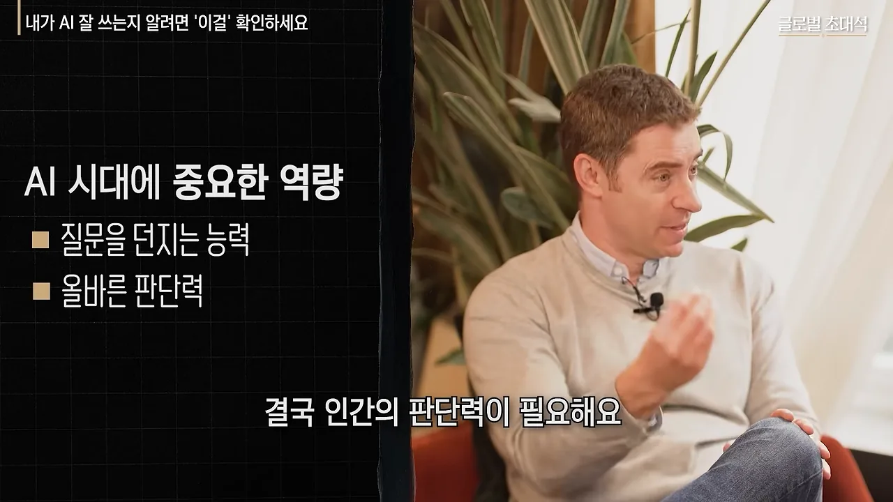
- 질문을 던지는 능력 — 이제 훨씬 많은 질문에 답할 수 있으니, 맞는 질문이 뭔지가 중요해요. 문제를 쪼개고 가장 중요한 걸 추려 내는 힘이에요.
- 올바른 판단력 — 창작에서의 안목이든 결정이든 마찬가지예요. 더 많이, 더 빨리 결정하게 된 만큼 맞는 결정을 하는 힘이 더 중요해져요.
진행자는 되물어요. 단순 작업을 직접 해 봐야 나중에 그런 판단을 할 수 있는 것 아니냐고요. 쇼메어 부사장은 '균형'이라고 답해요. 직접 해 보며 배우는 건 맞아요. 그런데 새벽 1~2시까지 엑셀 모델과 슬라이드를 붙잡던 시간이 전부 배움이 되진 않았대요. 훨씬 적은 시간으로도 필요한 걸 대부분 배울 수 있었을 거고, 이제 그 기회가 생겼다는 거예요. 진행자는 '그래도 끈기는 배우셨겠네요'라며 웃으며 넘어가요.
닷츠로 하는 일: 늘 켜져 있는 비서
닷츠(dots)는 OpenAI가 2026년 9월 공개한 상시 작동형 AI 에이전트예요. 진행자는 샘 올트먼이 '챗GPT보다 더 야심 찬, AI와 일하는 완전히 새로운 방식'이라고 했다는 말을 꺼내며, 챗GPT와 뭐가 다른지 물어요.
쇼메어 부사장은 둘을 따로 떼지 말고 챗GPT에서 닷츠로 이어지는 한 줄의 스펙트럼으로 보라고 해요. 그 위에 새로 얹힌 능력은 두 가지예요. 화면 왼쪽에 정리된 대로, 하나는 직접 실행하는 능력이고 다른 하나는 일정을 걸어 지속적으로 실행하는 능력이에요.
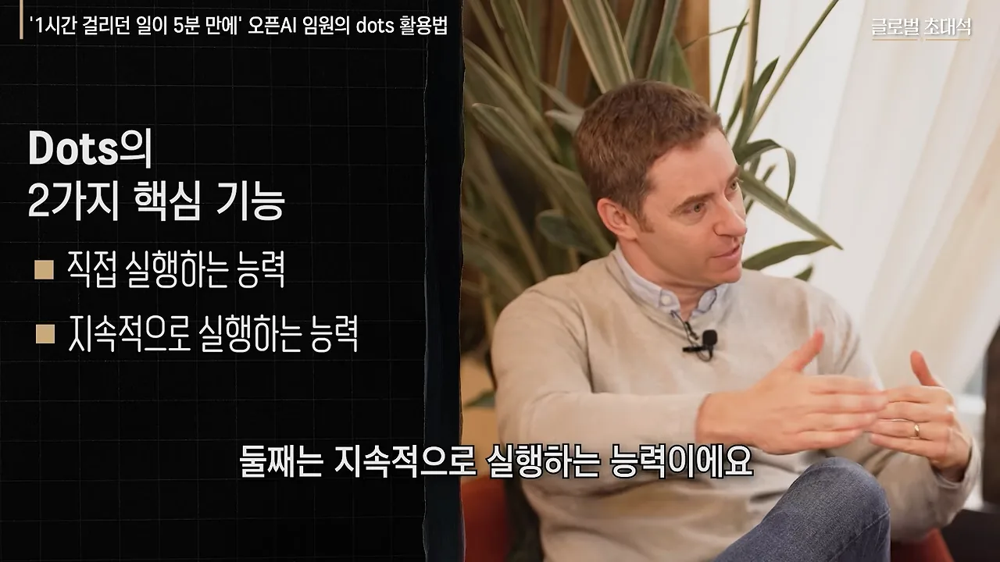
자는 동안 슬랙을 지켜보는 비서
OpenAI 안에서는 슬랙, 이메일, 온라인 문서 관리 도구로 정보가 쉴 새 없이 오가요. 일하는 속도도 계속 빨라져서 놓치는 게 생겨요. 그래서 닷츠에 몇 가지 작업을 걸어 뒀대요. 자는 동안이나 회의 중에도 슬랙을 살펴서, 놓친 것과 우선순위가 높은 일을 알려 주는 작업이에요.
아래 화면은 이 장면을 편집팀이 그린 거예요. 왼쪽 카드는 새벽 2시 25분에 잠든 벤지예요. 오른쪽 슬랙 채널 목록에서 노란 줄이 지나가는 Alex의 메시지에 '놓친 일' 표시가 붙어 있어요.
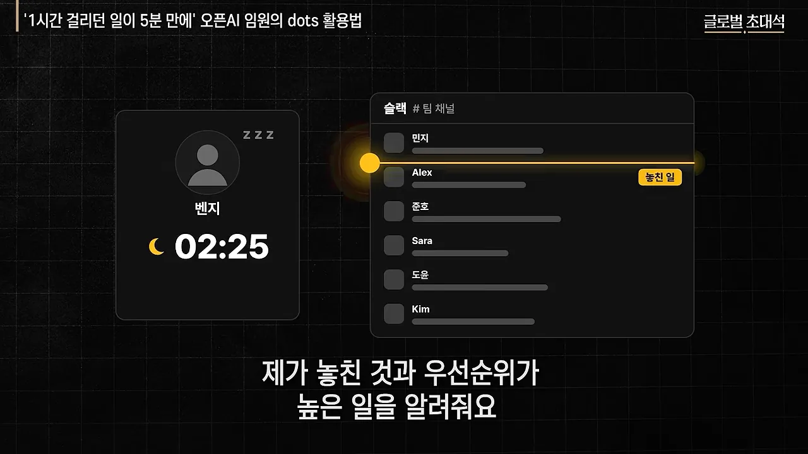
60분짜리 주간 보고가 5~10분으로
조직이 커질수록 정보를 팀에 고루 나누는 일이 중요해지고 어려워져요. 쇼메어 부사장은 매주 팀 전체에 업무 현황을 보내는데, 한 주 동안 쌓인 이메일과 슬랙을 다 뒤지는 일이 고역이었대요. 이제는 매주 닷츠가 자동으로 그 일을 해요. 아래 그림 왼쪽의 세 칸, 슬랙·이메일·편집한 파일을 가운데 닷츠가 모두 읽어요. 그리고 오른쪽처럼 '벤지, 이번 주에 한 일이에요'라는 다섯 문단 요약을 만들어 보내요.
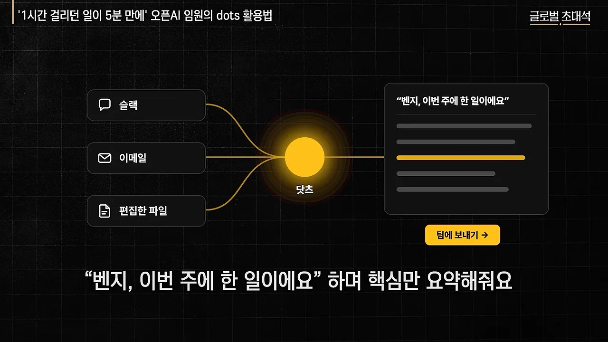
이렇게 아낀 시간은 자기가 더 가치를 더할 수 있는 높은 수준의 일에 쓴대요.
코덱스로 받은편지함 정리하기, 단계마다 승인 받기
진행자는 AI에게 이만큼 맡기기 전에 사용자가 무엇을 확인해야 하는지 물어요. 쇼메어 부사장은 닷츠 대신 코덱스 이야기로 답해요. 아래 화면은 OpenAI 홍보 영상 속 코덱스 작업 화면이에요. 사용자가 행사 운영용 마이크로사이트를 만들어 달라고 하자 코덱스가 6초째 작업 중이에요. 아래 노란 글씨는 편집팀이 붙인 설명이에요.
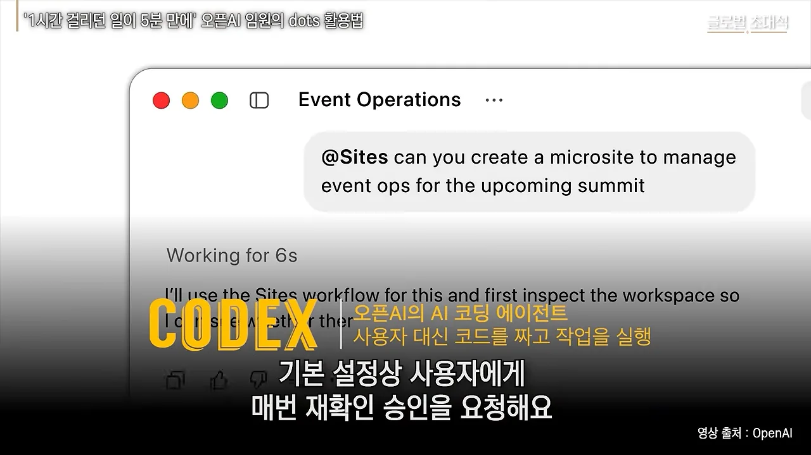
OpenAI에서 일하지만 본인은 이런 도구를 꽤 보수적으로 쓴대요. 회사 안에서도 얼마나 빨리 맡기는지는 사람마다 다르다고 해요. 예로 든 게 받은편지함이에요. 일정이 자주 바뀌다 보니 변경 알림 메일이 받은편지함을 뒤덮어, 정작 중요한 메일을 찾을 수가 없었어요. 그렇다고 일정 변화를 모를 수도 없죠. 아래 화면은 그 상태를 그린 거예요. 받은편지함 40통이 전부 '일정 변경: 주간 회의', '일정 변경: 인사 미팅' 같은 알림이에요.
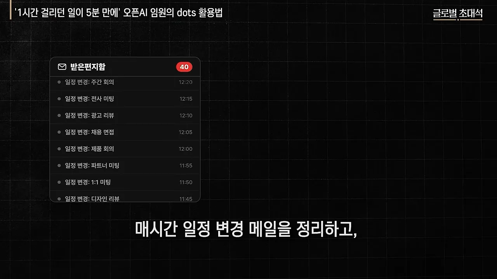
그 결과 50~60건의 변경이 네 줄짜리 요약이 돼요. 그런데 처음 설정할 때 코덱스는 바로 돌지 않았어요. 캘린더에 접근할 때, 메일 초안을 쓸 때, 메일을 보낼 때마다 '해도 될까요?'라고 멈춰서 물었대요. 아래 그림은 말로 설명한 이 흐름을 옮긴 거예요. 윗줄이 자동화가 하는 일, 아랫줄이 처음에 승인을 받은 세 동작이에요.
이렇게 단계마다 묻는 건 일부러 그렇게 만든 거래요. 도구가 어떻게 움직이는지 보면서 믿음을 쌓으라는 뜻이에요.
AI가 사람 통제 아래 있는지는 어떻게 알까요
진행자는 샘 올트먼이 몇 주 전 UN(United Nations) 총회에서 한 말을 인용해요. AI가 제도보다 빨리 움직이거나, 힘을 소수에게 몰아주거나, 사람이 이해하고 통제할 수 없는 결정을 내릴 수 있다는 경고였어요. 진행자는 OpenAI가 안전과 정렬 문제로 GPT-6.1 출시를 멈췄다는 소식도 덧붙여요. 그러면서 지금 쓰는 기술이 사람 통제 아래 있다는 걸 어떻게 알 수 있느냐고 물어요.
쇼메어 부사장은 자기 담당이 아니라 많이 말할 수 없다고 선을 그어요. 올트먼의 말은 앞날을 내다본 이야기라는 거예요. 다만 지금 쓰는 도구는 방금 설명한 승인 단계 덕분에 AI가 어떤 행동을 하는지 직접 볼 수 있으니 믿고 써도 된다고 답해요.
AI가 바꾸는 쇼핑과 마케팅
쇼메어 부사장의 전문 분야는 마케팅과 수익화예요. 진행자는 AI 에이전트가 사람 대신 쇼핑하는 일이 늘어난다는 기사를 꺼내며, 소비자가 검색 대신 AI에게 추천을 받으면 마케팅이 어떻게 바뀌는지 물어요.
답은 '바뀌지 않는 것'에서 시작해요. 무언가를 사려면 먼저 그 제품이 있다는 걸 알아야 하고, 비교·검토한 다음, 구매를 결정해요. 아래 화면의 동그라미 세 개가 이 고객 여정이에요. 이 순서는 앞으로도 그대로일 거래요.
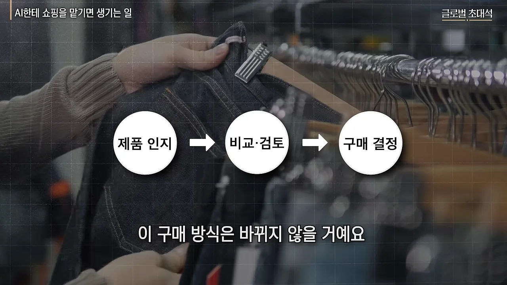
비교·검토는 선택지를 찾고, 장단점을 따지고, 판단 기준을 세우는 단계예요. 예전에 이 단계를 어떻게 했는지 화면 왼쪽에 적혀 있어요. 친구에게 묻고, 영상을 보고, 평점과 후기를 확인했어요. 쇼메어 부사장은 잡지까지 더해서, 온·오프라인의 여러 곳을 돌아다녀야 했다고 말해요.
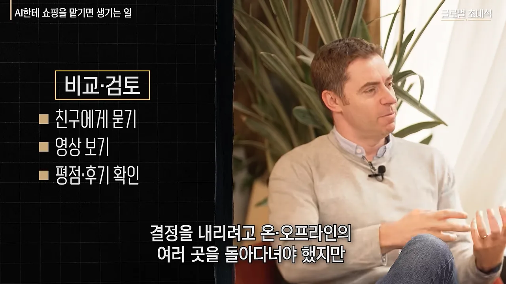
바뀐 건 이 흩어진 과정이 한 곳으로 모인다는 점이에요. 그곳이 챗GPT라는 게 쇼메어 부사장의 주장이에요. 챗GPT가 '결정이 만들어지는 곳'이 되고 있다는 거죠. 아래 그림은 말로 설명한 이 변화를 한 장에 옮긴 거예요.
그래서 마케터에게는 처음으로 '고민하는 순간'에 함께할 기회가 생겼대요. 쇼메어 부사장은 매주 10억 명 넘게 챗GPT를 쓴다며, 이 규모의 채널에서 소비자의 결정에 보탬이 될 수 있다고 말해요. 챗GPT 광고를 그런 새 마케팅 채널로 소개하고, 실제 구매가 일어나는 퍼널의 맨 아래에서도 변화가 시작됐다고 덧붙여요.
SEO에서 GEO로
진행자는 SEO(Search Engine Optimization)와 GEO(Generative Engine Optimization)의 차이를 설명해 달라고 해요. 아래 화면은 편집팀이 세 용어를 나란히 놓은 거예요. SEO는 검색 결과 상단에 내 페이지가 뜨도록, GEO는 AI 답변 안에 내 브랜드가 언급되도록, AEO(Answer Engine Optimization)는 질문에 대한 바로 답변으로 채택되도록 만드는 일이에요.
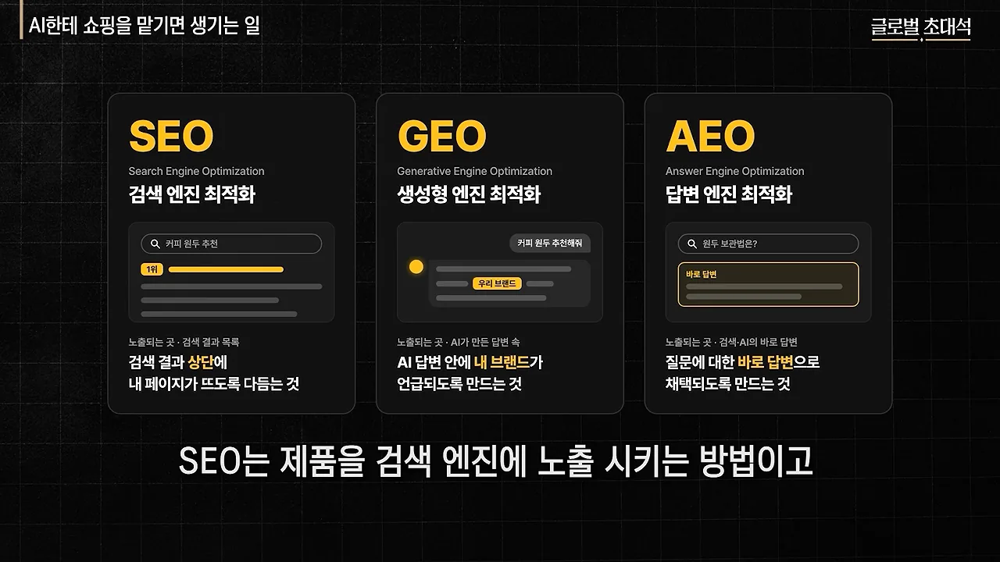
흥미로운 건 OpenAI의 입장이에요. 브랜드가 챗GPT에 잘 나오는 방법을 따로 안내하지 않는대요. 모델과 사용 경험이 계속 바뀌는 중이고, 무엇보다 OpenAI는 소비자를 위해 일하기 때문이래요. 그래서 브랜드에 주는 조언은 SEO 때와 비슷한 하나뿐이에요. 화면 왼쪽처럼, 제품 정보를 온라인에 공개하면 AI가 배워서 적절한 때 추천해 줘요.
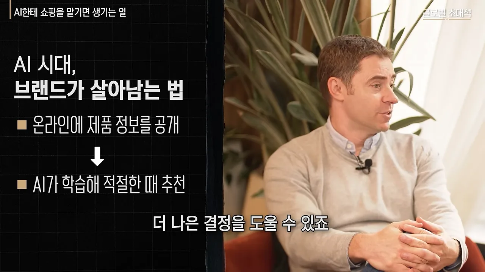
광고는 최후의 수단이라더니, 왜 광고를 할까요?
OpenAI는 한때 광고를 '최후의 수단'이라고 불렀어요. 그런데 2026년 초부터 챗GPT에 광고를 시작했죠. 진행자가 왜 마음을 바꿨는지 물어요.
쇼메어 부사장은 먼저 망설였던 이유부터 말해요. 챗GPT는 사람들이 깊은 대화를 나누고, 정보를 나누고, 행동까지 맡기는 신뢰가 아주 높은 공간이에요. 광고는 이런 곳에 들어와 본 적이 없어요. 광고가 들어오면 긴장이 생길 수 있어서 회사 안에서도 주저했대요.
그럼에도 광고를 하는 이유는 OpenAI의 사명이에요. 사명은 AGI(Artificial General Intelligence)의 혜택을 모든 인류에게 가져가는 거예요. 그런데 인류의 큰 부분은 챗GPT에 돈을 낼 여력이 없거나 낼 생각이 없어요. 그래도 괜찮지만, 그 사람들이 이 '초능력'에서 소외되면 안 된다는 거예요. 더 좋은 AI를 모두에게 주려면 그 비용을 댈 경제 모델이 필요하고, 그게 광고래요.
광고 원칙부터 공개했어요
쇼메어 부사장이 OpenAI에 온 건 올해 1월 초예요. 그때 OpenAI는 광고 제품을 만들기는커녕 사내 테스트도 하기 전에, 챗GPT 광고를 시험하겠다는 계획과 광고 원칙을 세상에 먼저 발표했어요. 사용자의 신뢰와 가치를 지키며 광고를 하겠다는 걸 공개적으로 약속하려는 의도적인 결정이었대요. 그가 설명한 원칙은 네 가지예요.
| 원칙 | 뜻 | 왜 필요한가요 |
|---|---|---|
| 답변의 독립성 | 광고는 답변에 영향을 주지 않아요. 돈을 내도 답변에 제품을 넣을 수 없어요 | 챗GPT에서 객관적인 조언을 받는다고 믿을 수 있어야 해요 |
| 대화의 비밀 보장 | 챗GPT와 나눈 대화는 광고주와 절대 공유하지 않아요 | 대화가 나와 챗GPT 사이에만 남는다는 확신이 있어야 편하게 이야기해요 |
| 선택권과 통제권 | 광고를 볼지 말지 고를 수 있어요. 광고 없는 유료 요금제가 있고, 데이터 사용도 직접 통제해요 | 사용자가 주도권을 쥐어야 해요 |
| 장기적 가치 | 광고는 사용자를 위해 있어야 해요 | 신뢰를 지키고, 사용자에게 도움이 되고, 광고주에게도 가치가 있어야 오래가요 |
첫 번째 원칙은 아무리 강조해도 지나치지 않대요. 아래 화면 오른쪽에 그 세부 내용이 세 줄로 적혀 있어요. 마지막 줄, 답변 모델과 광고 모델이 별개라는 점이 핵심이에요. 두 모델은 서로 소통하지 않는대요.
the ads have no influence on the answers you get from ChatGPT, full stop.
광고는 챗GPT 답변에 아무 영향도 주지 않아요. 이상 끝.
— 영상 21:54
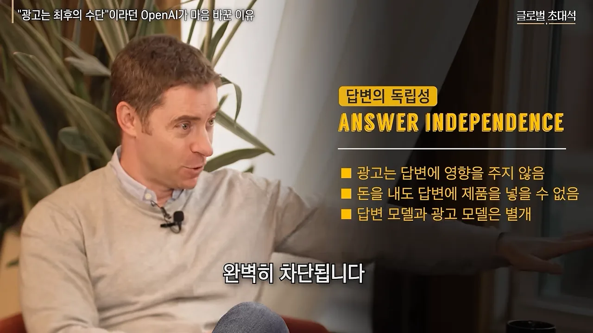
네 번째 장기적 가치는 광고를 판단하는 순서이기도 해요. 첫째, 이 광고가 신뢰를 지키고 높이는가. 둘째, 사용자에게 도움이 되는가. 예를 들어 뭔가 살지 고민하는 사람에게 몰랐던 제품을 알려 주는 식이에요. 아래 화면 오른쪽에 이 두 질문이 적혀 있어요. 쇼메어 부사장은 셋째로 광고주에게 가치가 있는지를 덧붙이고, 이 셋을 해내면 나머지는 저절로 따라온다고 말해요.
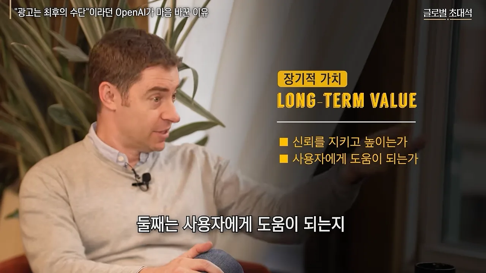
광고는 어떻게 보이나요
무료 요금제나 Go 요금제를 쓰면 광고를 보게 돼요. 지금은 대화가 끝난 뒤에 광고가 나와요. 아래 OpenAI가 공개한 화면에서 노란 테두리 안이 광고예요. 회색 선 아래 작은 이미지와 글이 든 사각형 상자가 뜨고, 'HarborWest Supply Co.' 옆에 '광고' 표시가 붙어 있어요. 위쪽 답변은 담장 자재를 안내하고, 광고는 간편 설치 담장 패널을 보여 줘요.
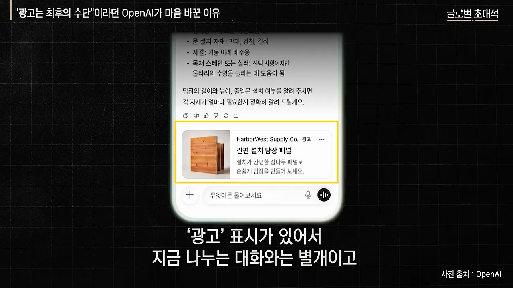
광고주는 무엇을 얻고, 사용자는 어떻게 믿을까요?
브랜드 입장에서는 왜 검색 광고나 인스타그램, 틱톡 대신 챗GPT 광고에 돈을 써야 할까요. 쇼메어 부사장은 사람들이 챗GPT를 쓰는 방식에서 답을 찾아요. 새로운 걸 찾으려는 사람, 여러 제품을 비교하는 사람, 이미 마음을 정하고 마지막 질문만 남은 사람이 모두 챗GPT에 와요. 그중 챗GPT만의 강점은 퍼널의 중간, 즉 비교·검토 단계예요. 소비자가 따지는 기준에 내 제품이 어떻게 맞는지 그 순간에 보여 줄 수 있는 자리는 이전에 없었다고 해요.
예산 500달러 커피 로스터라면
진행자는 예산이 500달러뿐인 작은 커피 로스터를 예로 들어요. 광고가 값어치를 하는지 어떻게 아느냐는 질문이에요. 답은 '내 사업의 성과를 어떻게 재는지'에서 시작해요. OpenAI는 이를 위해 두 가지 도구를 줘요. 아래 화면에 둘이 정리돼 있어요. 픽셀은 홈페이지에 심는 추적 코드로, 광고를 본 사람의 구매나 신청을 기록해요. CAPI(Conversions API)는 광고주 서버가 광고 플랫폼으로 구매 결과를 직접 보내는 서버 간 연결이에요.
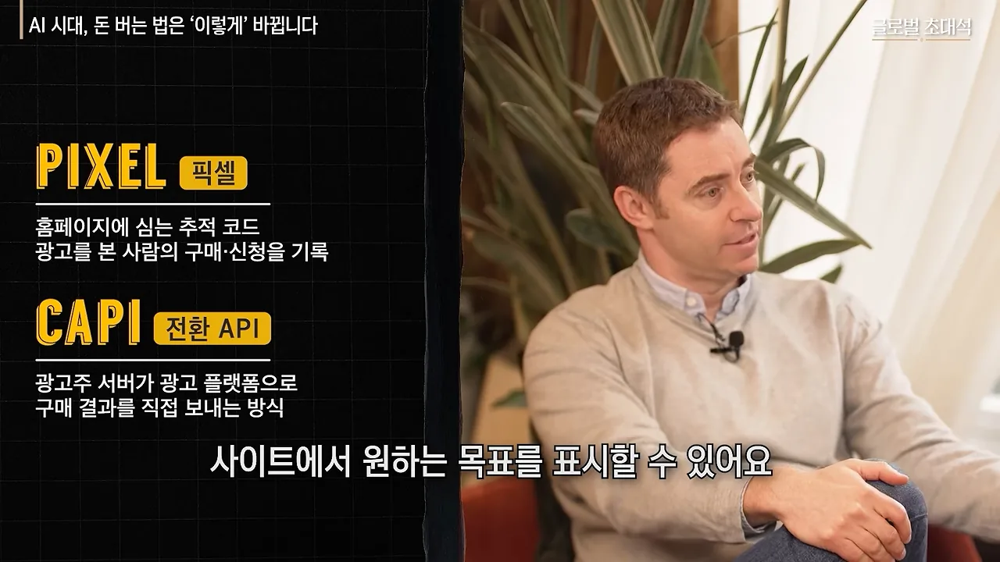
목표는 판매일 수도 있고, 커피 원두가 아니라 커피 장비를 판다면 상담 신청 같은 잠재 고객 확보일 수도 있어요. 사이트에서 원하는 결과를 표시해 두면, 광고를 본 사람이 그 결과까지 갔는지 이어서 볼 수 있어요.
광고 규칙은 어떻게 지켜지나요
진행자는 OpenAI의 광고 제한을 짚어요. 미성년자 대상 광고는 안 되고, 건강·정신건강·정치 관련 광고도 안 된대요. 그런데 아래 화면 속 2026년 9월 5일 워싱턴포스트 기사처럼, 일부 캠페인이 유료 챗GPT로 정치 광고를 만들었다는 보도가 있었어요. 챗GPT 안의 광고와는 다른 이야기지만, 제한을 우회할 수 있다는 걸 보여 준다는 거예요.
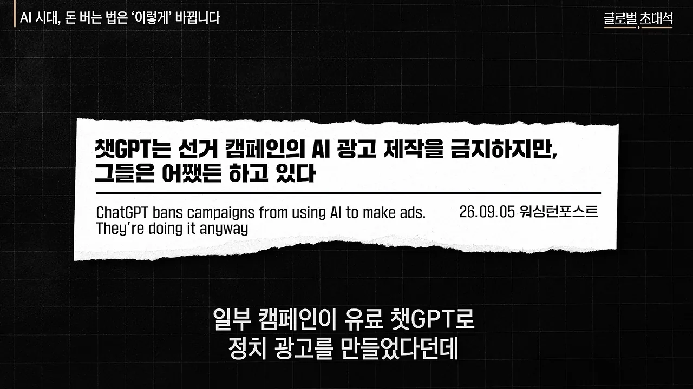
쇼메어 부사장은 두 가지를 나눠 봐야 한다고 답해요. 광고가 어디에 뜨는지, 그리고 누가 무엇을 광고하는지예요. 두 쪽은 따로 돌아가는 통제 장치를 갖고 있대요. 광고가 뜨는 자리는 분류기가 민감한 대화를 걸러 내서 정해요. 광고를 내는 쪽은 입점할 때부터 광고 하나하나, 광고가 연결된 랜딩 페이지까지 검사해요. 아래 그림은 말로 설명한 두 갈래를 나란히 놓은 거예요.
편집팀은 이 대목을 아래 한 장으로 마무리해요. 자동화 시스템과 전문 검수 인력, 두 동그라미가 점선으로 묶여 '이중 심사'를 이뤄요. 진행자가 결국 사람이 지켜보는 거냐고 묻자, 쇼메어 부사장은 '판단'이 들어간다고 짧게 답해요.
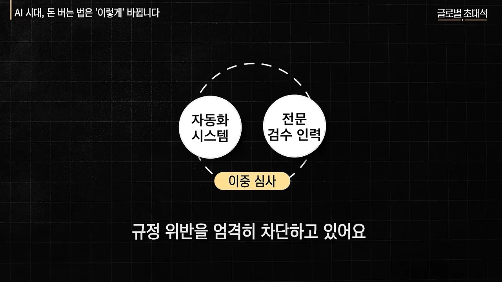
10년 뒤, 그리고 바뀌지 않았으면 하는 것
마지막 질문은 10년 뒤예요. OpenAI와 다른 프런티어 연구소들이 지금 논쟁 중인 문제를 대부분 잘 풀었다면 어떤 세상일까요. 쇼메어 부사장은 머릿속 아이디어가 아주 짧은 시간에 현실이 되는 세상을 그려요. 도구가 힘을 실어 주니 창작과 만들기가 폭발하고, 사람의 창의성과 판단력, 사려 깊음이 새로운 높이에 오른다는 거예요.
바뀌지 않았으면 하는 건 뭘까요. 그는 바람이 아니라 현실이라고 답해요. 판단력, 창의성, 장인정신처럼 우리를 우리답게 만드는 요소는 바뀌지 않고, 오히려 더 중요해지고 더 커질 거라고요.